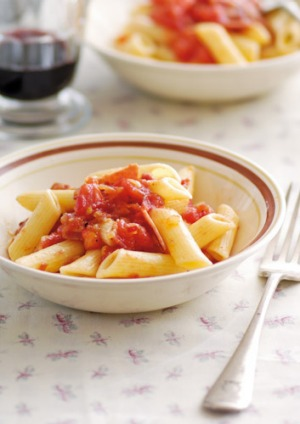

How to prepare Pasta

Ingredients
- 1 kg very ripe tomatoes (or use tinned chopped tomatoes if short on time)
- 500g pasta
- 1 tbsp olive oil
- 1 small onion, very finely chopped
- 2 tsp very finely chopped fresh chilli
- 6 thin slices pancetta or 3 bacon slices
- parmesan cheese shaved, to serve
Method
-
Finely chop the pancetta or bacon. Score a cross in the base of each tomato. Soak in boiling water for 1 minute, then drain and plunge into cold water briefly. Peel the skin away from the cross. Halve the tomatoes, remove the seeds and chop the flesh.
- Cook the pasta in a large saucepan of rapidly boiling salted water until al dente. Drain well and return to the pan to keep warm.
- Meanwhile, heat the oil in a heavy-based frying pan. Add the pancetta or bacon, onion and chilli and stir over medium heat for 3 minutes. Add the tomato and season to taste. Reduce the heat and simmer for 3 minutes. Add the sauce to the pasta
and toss until well combined. Serve garnished with shavings of parmesan cheese, if desired.